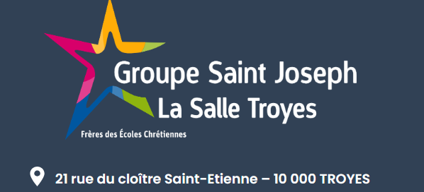

BTS SIO – Saint Joseph La Salle
Services Informatiques aux Organisations · Troyes (2023–2025)
La Formation
Le BTS Services Informatiques aux Organisations (SIO) est une formation en deux ans qui prépare les étudiants à des métiers techniques dans le domaine de l'informatique. Cette formation propose deux spécialisations principales : l'option SISR (Solutions d'Infrastructures, Systèmes et Réseaux) et l'option SLAM (Solutions Logicielles et Applications Métiers).

Les Options du BTS SIO
Option SISR
L'option SISR vous forme à la gestion des infrastructures informatiques : installation, configuration et sécurisation des réseaux et systèmes, maintenance et supervision. Vous serez préparé à intervenir sur des projets complexes de réseaux et d'infrastructure.
Option SLAM
L'option SLAM vous offre une spécialisation dans le développement logiciel : conception et maintenance d'applications adaptées aux besoins des entreprises, travail avec des bases de données, maîtrise de la programmation web et mobile.
Pourquoi Saint Joseph La Salle ?
Le BTS SIO à Saint Joseph La Salle à Troyes permet d'apprendre dans un environnement moderne, avec un suivi personnalisé pour chaque étudiant. L'école travaille en partenariat avec de nombreuses entreprises locales, offrant des opportunités de stages et d'insertion professionnelle. Une formation de qualité et un accompagnement tout au long du parcours.
Débouchés & Poursuite d'études
À l'issue de la formation, les débouchés sont variés : technicien informatique, administrateur systèmes et réseaux, développeur web, responsable de la sécurité informatique. Des opportunités de poursuite en Bachelor, Licence Pro ou école d'ingénieurs s'offrent également.
Compétences clés – Option SISR
- Concevoir et administrer un réseau d'entreprise (LAN, WAN, VPN)
- Installer et configurer des serveurs (Windows Server, Linux)
- Mettre en œuvre des solutions de sécurité (pare-feu, DMZ, VLAN)
- Assurer la supervision et la maintenance préventive des équipements
- Rédiger des procédures et de la documentation technique
- Intégrer des solutions cloud et de virtualisation